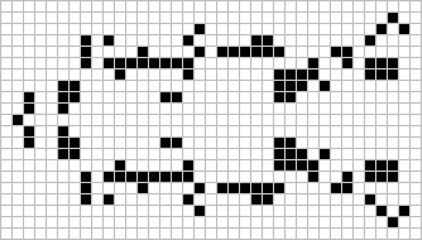

O jogo da vida é um autómato celular desenvolvido pelo matemático britânico John Horton Conway em 1970. É o exemplo mais bem conhecido de autômato celular. O jogo foi criado de modo a reproduzir, através de regras simples, as alterações e mudanças em grupos de seres vivos, tendo aplicações em diversas áreas da ciência. As regras definidas são aplicadas a cada nova "geração"; assim, a partir de uma imagem em um tabuleiro bi-dimensional definida pelo jogador, percebem-se mudanças muitas vezes inesperadas e belas a cada nova geração, variando de padrões fixos a caóticos.

As regras são simples e elegantes: